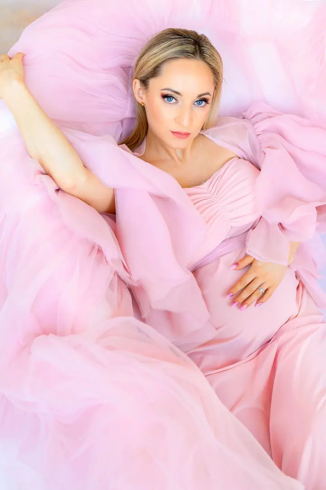
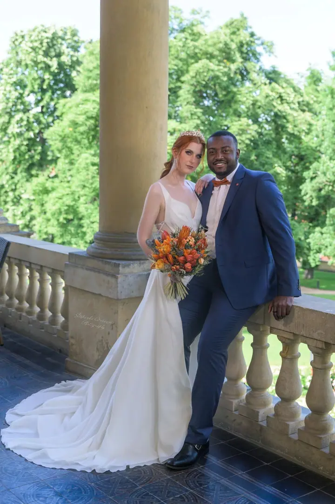
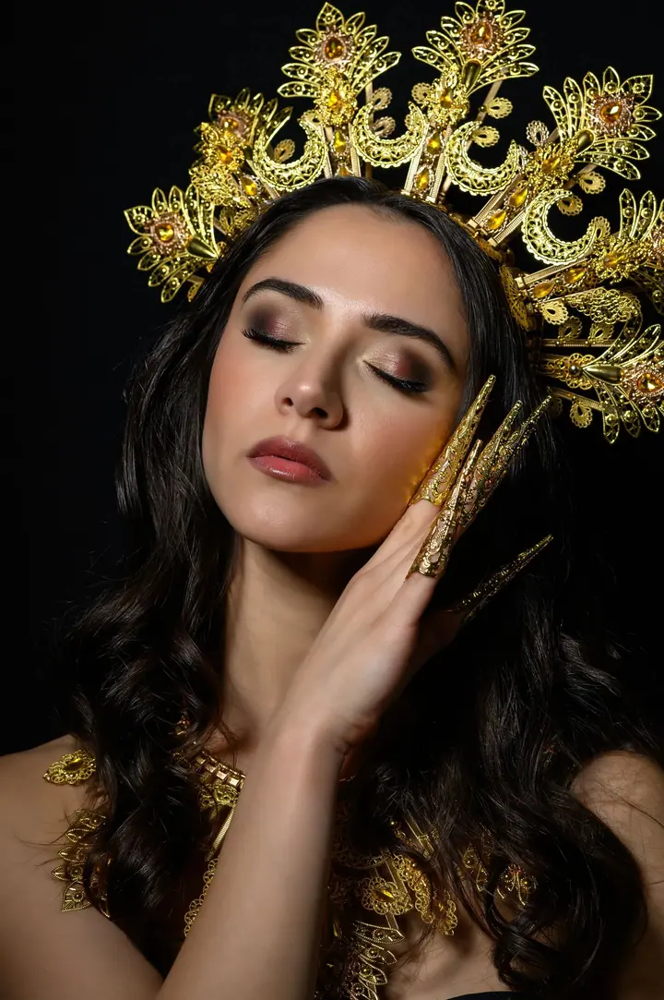
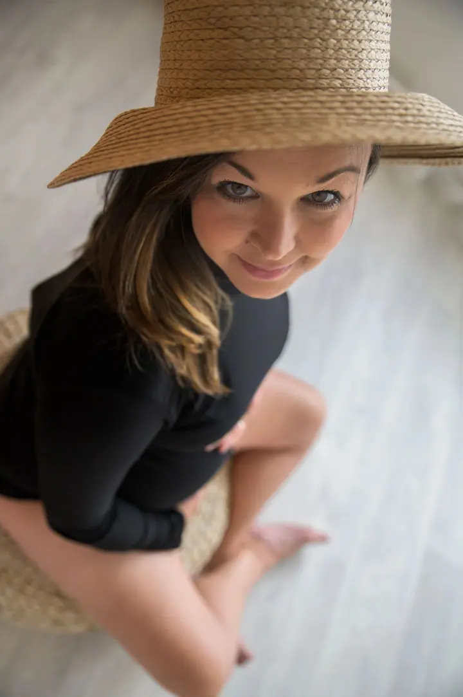
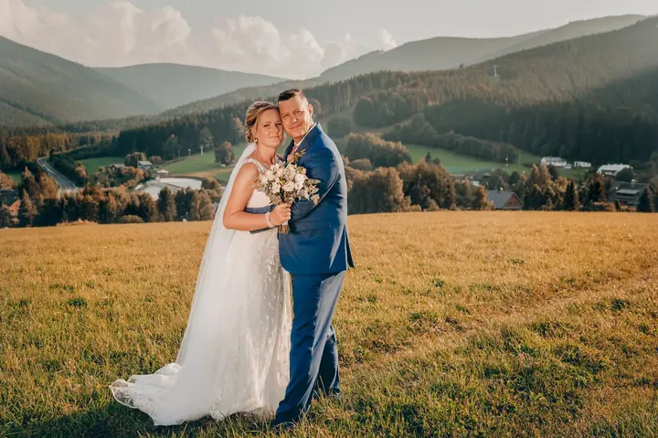
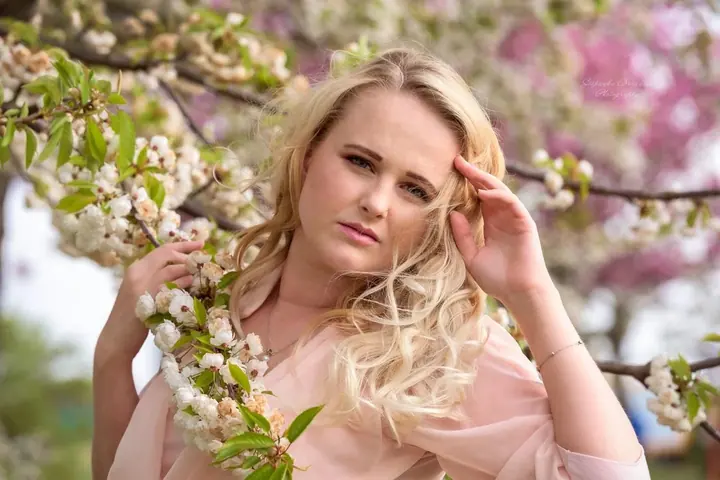

Rodinné focení
Společné fotky celé rodiny i těch nejmenších. Rodinné focení je u mě od 3 000 Kč.





Jmenuji se Štěpánka Vršanová a pod značkou Esvephoto fotím rodiny, portréty i svatby. Fotím v Praze, v ateliéru i venku.
Více o mně
„Fotky, ke kterým se budete rádi vracet.“
— Štěpánka Vršanová
Společné fotky celé rodiny i těch nejmenších. Rodinné focení je u mě od 3 000 Kč.
Portréty v ateliéru i venku, od jemných světlých snímků po výrazné kreativní focení se šperky a kostýmem. Portrétní focení začíná na 3 000 Kč.
Fotím obřad, novomanžele na zámku i v krajině. Svatební focení je od 8 000 Kč.
Jmenuji se Štěpánka a fotím pod značkou Esvephoto. Nejčastěji mě najdete u rodinného focení, ale stejně ráda stojím za foťákem při portrétech a na svatbách.
Baví mě pracovat se světlem a s prostředím. Jednou je to světlý ateliér a jemné pastelové šaty, jindy tmavé pozadí a zlatá koruna, nebo louka nad údolím ve chvíli, kdy zapadá slunce.
Na focení si dáváme čas, abyste se před objektivem cítili dobře. Fotky pak mají být hlavně vaše a máte se k nim chtít vracet.
Zavolejte mi nebo napište přes formulář. Probereme, jaké focení chcete a kdy se vám hodí.
Společně vybereme, jestli budeme fotit v ateliéru, venku nebo u vás, a poradím vám s oblečením.
Fotíme v klidu a bez spěchu. Vedu vás, takže nemusíte umět pózovat.
Vyberu nejlepší snímky, pečlivě je upravím a pošlu vám je v plném rozlišení.
Rodinné focení a portréty začínají na 3 000 Kč, svatební focení na 8 000 Kč. Přesnou cenu vám řeknu podle toho, co budete chtít.
Fotím v Praze, v ateliéru i v exteriéru. Pokud máte na mysli jiné místo, napište mi a domluvíme se.
Nejlépe oblečení, ve kterém se cítíte dobře a které spolu barevně ladí. Před focením vám ráda poradím.
Termín předání vám řeknu při domluvě. Každou fotku upravuji ručně, proto chvíli počkejte.